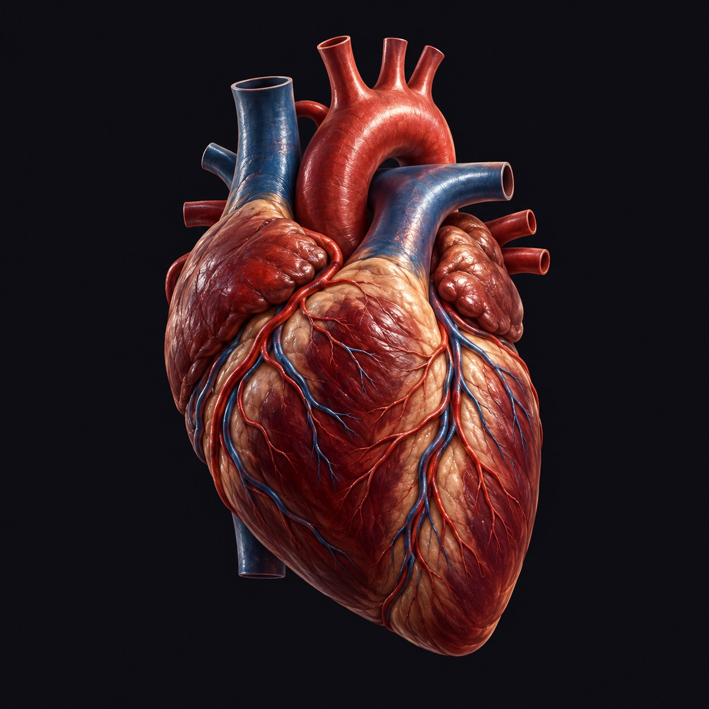

AN INTERACTIVE FIELD NOTE

READ THE MOTION, KEEP THE CONTEXT
Heart rate controls the illustrated pulse. The trail follows normalized recorded GPS positions. Night orbs encode recorded sleep duration. Agent stars represent actual synthetic Braintrust evaluation cases.
Artwork and animation are illustrative. They do not reconstruct anatomy, prove recovery, explain why a burro stopped, or establish medical conclusions. The default dataset is fictional. Personal snapshots are available only through the loopback server.
Use Reduce motion or pause the replay at any time. Keyboard: Tab between controls; arrow keys scrub the selected slider.